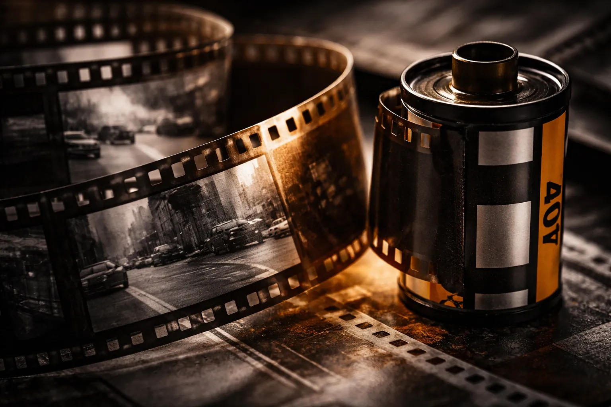
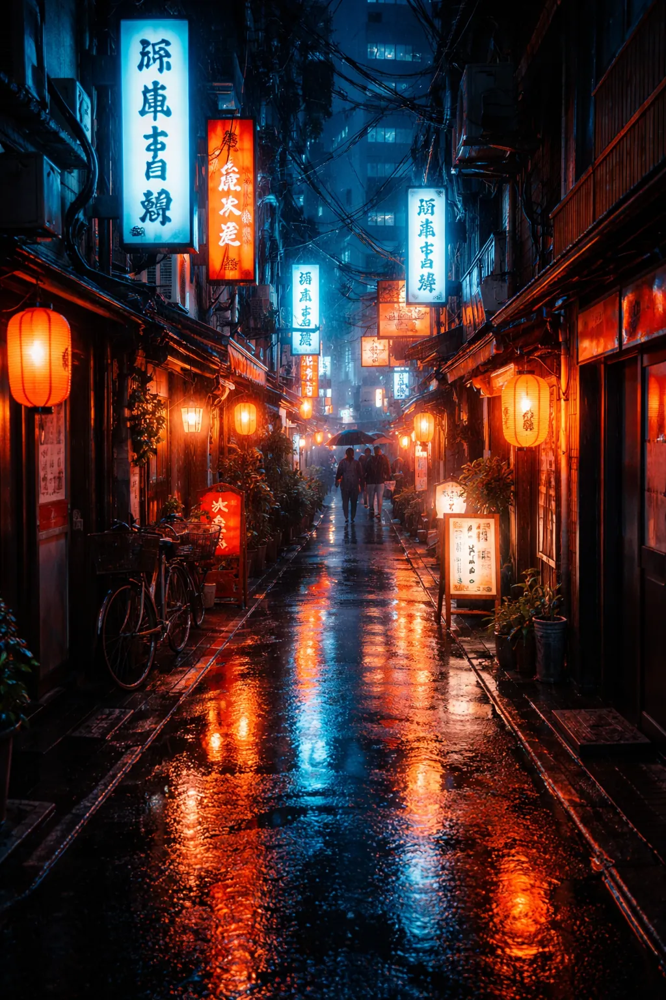
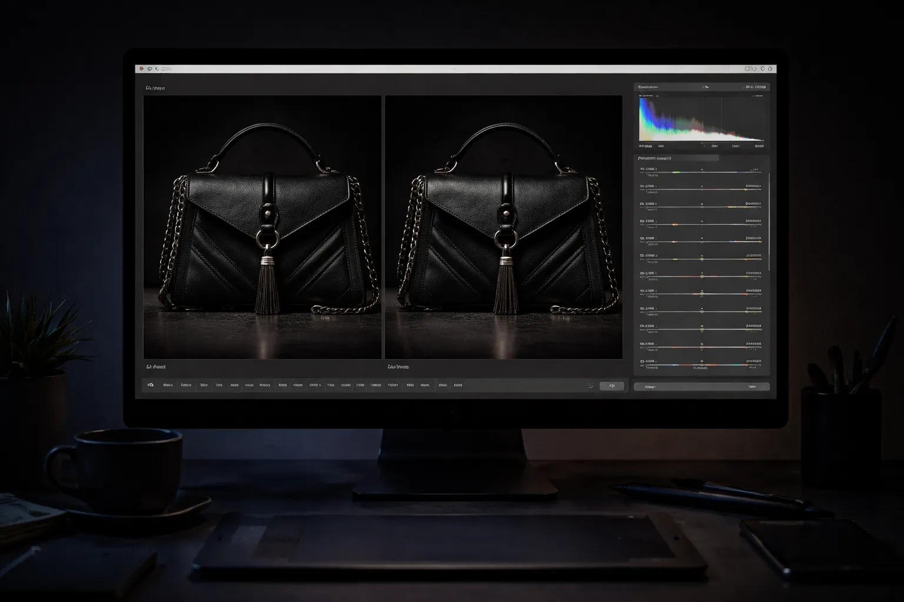
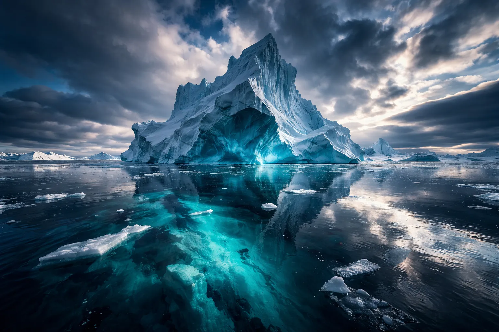
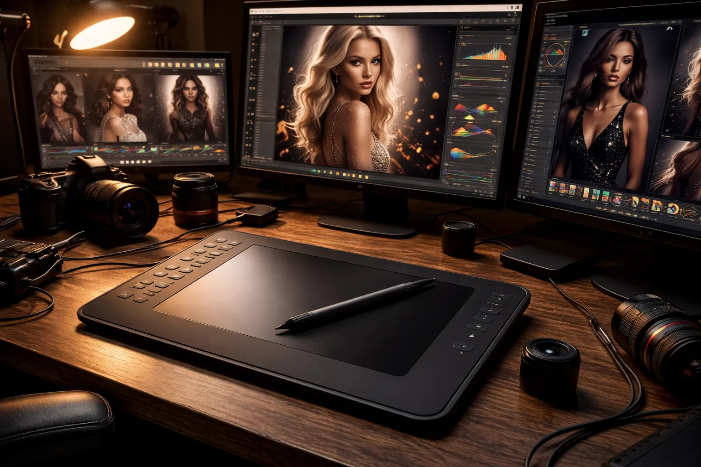

Articles récents

Le retour du grain : pourquoi la génération Z abandonne le numérique pour la pellicule
Kodak Gold, Ilford HP5, Cinestill 800T — les ventes de pellicules explosent et les labos de développement rouvrent dans toutes les grandes villes. Enquête sur une contre-révolution photographique.
Annie Leibovitz, cinquante ans de portraits : ce que son regard révèle de nous
De Rolling Stone à Vanity Fair, retour sur la carrière hors norme de la portraitiste légendaire et sur ce qui fait la force de ses images.

Tokyo vue d'en bas : le portfolio de Kenji Mori sur l'architecture nocturne japonaise
Des ruelles de Shinjuku aux tours de Shibuya, un regard nocturne et silencieux sur la ville qui ne dort jamais.

RAW vs JPEG en 2026 : la fin d'un débat qui n'a plus lieu d'être ?
Avec les capteurs de dernière génération et le traitement IA embarqué, les arguments traditionnels en faveur du RAW s'effritent.

Paul Nicklen et les glaces qui disparaissent : la photographie comme témoignage
Photographe des régions polaires pour National Geographic, Paul Nicklen met ses images au service de la préservation des océans. Analyse d'un travail entre art et engagement.

Les 10 meilleurs logiciels de retouche photo en 2026 : Lightroom a-t-il encore le monopole ?
Capture One, Luminar Neo, Darktable — le marché se fragmente et l'IA redéfinit ce que signifie « retoucher » une image.